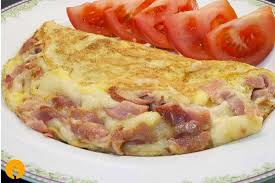
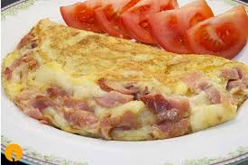

Omelette de Queso
Un desayuno rapido y delicioso para empezar el dia con energia
Ingredientes:
- 3 huevos
- Queso rallado
- Sal y pimienta
Instrucciones:
- Batir los huevos con sal y pimienta.
- Verter en sartén caliente.
- Agregar queso y doblar.
Un desayuno rapido y delicioso para empezar el dia con energia
